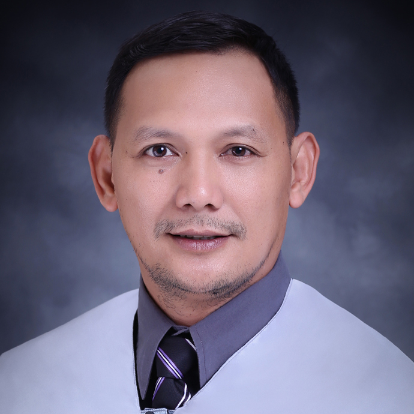
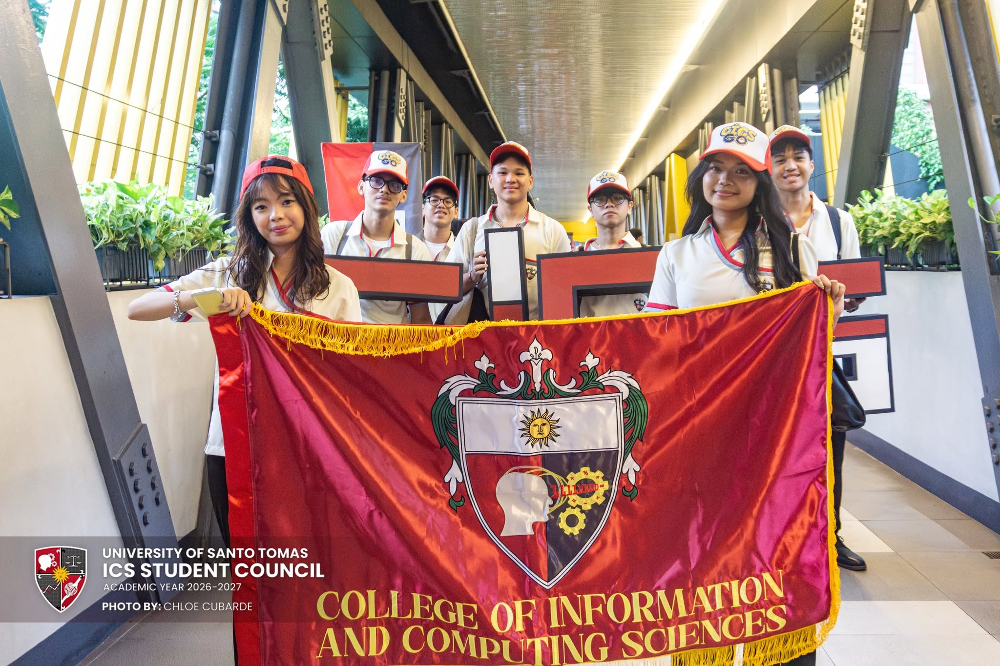
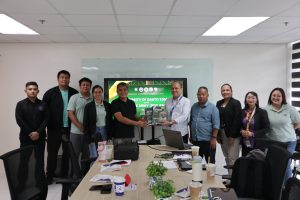
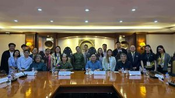
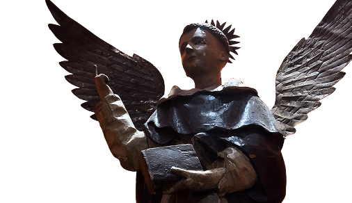

Tech-enthusiast outlet of more skills!
Photo by Enrique Benedictos
UST CNAG-CICS is the Official Cisco Organization for the College of Information & Computing Sciences
UST SITE is the Official Student Organization for Information Technology students in the College of Information & Computing Sciences
UST ISS is the Official Student Organization for Information Systems students in the College of Information & Computing Sciences
UST CSS is the Official Student Organization for Computer Science students in the College of Information & Computing Sciences
UST Pax Romana - ICS Unit is the Official Religious and Values-Formation student orgaization of the College of Information & Computing Sciences

Dean
Regent
Assistant Dean
Secretary
Chair, Computer Science
Chair, Information Systems
Chair, Information Technology

The College of information and Computing Sciences welcomed its newest members as they begin their Thomasian journey through the ROARientation and Thomasian Welcome Walk 2026.
Department of Information Technology academic staff Asst. Prof. Edwin S. de Guzman, DIT, was elected International Teacher Representative and among the Board Directors of the Computer Science Teachers Association (CSTA).

By the means of the Department of Marketing Management, UST formally turned over the market validation research for Project SAFEGUARD Robot.

UST and the Philippine Army formally disclose a research collaboration through the signing of a Memorandum of Agreement (MOA) for the Prototype Development of the SAFEGUARD Robot.
The College of Information and Computing Sciences of the University of Santo Tomas, under the inspiration of its model, Saint Thomas Aquinas, and its patron, Saint Vincent Ferrer, declares its commitment to the pursuit of truth and the formation of technically competent ITE professionals endowed with a strong commitment to lifelong learning, social responsibility and a desire for leadership in the spirit of service in their respective fields of specialization.
